Hypercomplex Numbers
Hypercomplex numbers can be considered as a generalization of complex numbers. This website provides some interactive visualizations to build intuition.
In the following we consider numbers of the form:
$$ \A{x} = \xs{\alpha}\es{\alpha} = \sum _{k=0}^{n} \xs{k}\es{k} = \xs{0}\es{0} + \xs{1}\es{1} + \dots + \xs{n}\es{n} $$
With multiplication determined by structure constants $\Cs{\alpha}{\beta}{\gamma}$:
$$ \es{\alpha}\es{\beta} = \Cs{\alpha}{\beta}{\gamma}\es{\gamma} $$
The product $\A{z}$ of two hypercomplex numbers $\A{x}$ and $\A{y}$ is given by:
$$ \zs{\gamma}\es{\gamma} = \xs{\alpha}\es{\alpha} \; \ys{\beta}\es{\beta}= \xs{\alpha}\ys{\beta} \; \es{\alpha}\es{\beta} = \xs{\alpha}\ys{\beta} \; \Cs{\alpha}{\beta}{\gamma}\es{\gamma} $$
Or in string diagram form:

For a detailed discussion of hypercomplex numbers including their algebraic properties, see: IXEnv.
For a collection of notable and/or well-known special cases of hypercomplex numbers, see: AADB.